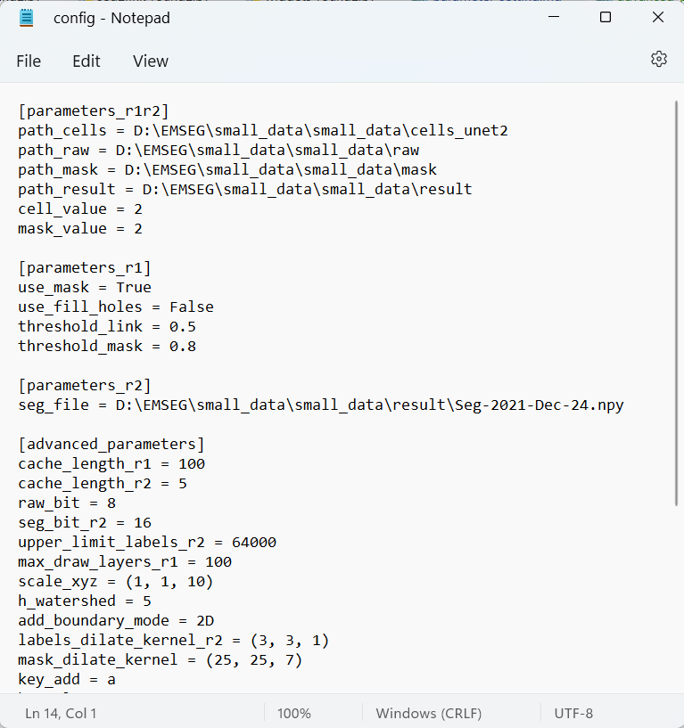

The config.ini file stores the parameters set in the GUIs in round 1 or round 2, and also the advanced parameters controlling the details. In most cases, these advanced parameters do not need modifications.

To modify these advanced parameters, open the saved config.ini file with a text editor, edit them, and save the results. The modified parameters will be applied after loading the modified config.ini in round 1 or round 2.
Here are the explanations of these advanced parameters:
- cache_length_r1 = 10
-
cache_length_r2 = 5
The maximal number of steps of cached actions. The default values for round 1 and 2 are 10 and 5, respectively. Users could set it to a larger value, but keep in mind that this will take up more RAM, especially in round 2.
-
raw_bit = 8
The bit depth of the raw image. Used to set the contrast. By default 8 bit.
-
seg_bit_r2 = 16
The bit depth to store the segmentation results as numpy array file. By default 16. Set it to 32 will allow users to analyze more cells than 65536, whereas this will also occupy double space of RAM. Set it to other values is illegal.
-
upper_limit_labels_r2 = 64000
The limitation of the allowed largest cell ID. When a new operation leads to ever large ID. The program will show a warning message to ask users to delete unnecessary cells. By default 64000. Set it to a vallue < 65535 if set_bit_r2 = 16, or set it to a value < 65535^2 -1 if set_bit_r2 =32.
-
max_draw_layers_r1 = 100
The maximal number of slices that can displayed on the screen in round 1. By default 100. Increase this value will slow down the updating of the segmentation results after each operation.
-
scale_xyz = (1, 1, 10)
The scaling factors used when displaying the image stack in 3D view, corresponding to x, y, and z direction. By default (1, 1, 10), which indicates a much lower (1/10) resolution between slices than in the x-y plane. If you don't use the 3D view, you don't need to change it.
-
h_watershed = 5
Used to inhibit over-segmentation. A larger value will lead to a autosegmentation with less cells. By default 5. Must be an integer >= 1.
-
add_boundary_mode = 2D
Currently unused.
-
labels_dilate_kernel_r2 = (3, 3, 1)
Currently unused.
-
mask_dilate_kernel = (25, 25, 7)
Used to fill "gaps" region in the mask image, corresponding to x, y, and z direction. By default (25, 25, 7). A larger value will fill larger "gaps". If you don't use mask image, you don't need to change it.
-
key_add = a
- key_clean = c
- key_merge = m
- key_delete = d
- key_undo = u
- key_redo = f
- key_next_r1 = Shift-n
- key_separate_link = r
- key_separate = k
- key_insert = i
- key_switch_one_label_all_labels = q
-
key_online_help = h
The hot-keys used for each operation. could be a single letter or a letter combined with Control, Alt, and Shift. Take care not to conflict with each other, and not overwrite the required hotkeys supplied by napari (such as E: eraser and L: pick mode).